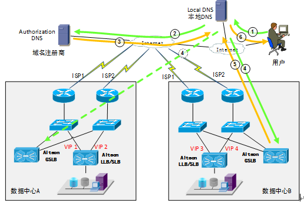
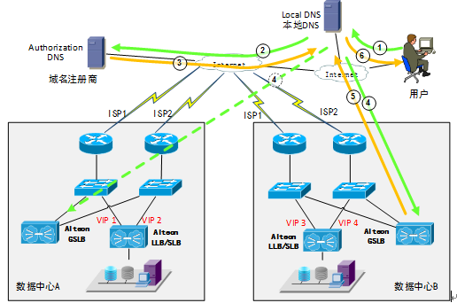

DNS如何实现全局负载均衡？
关注者
45
被浏览
8222
4 个回答
资深域名行业从业者、技术工程师
1，DNS配置view功能，即不同来源（local dns）响应（分配）不同节点
2，有管理节点负载能力（简单化就是健康状态和load balance）
DNS全局负载均衡通过智能DNS解析来实现，通常在不同的地区设立多个数据中心，每个数据中心又使用多个运营商的线路。
智能DNS可以通过多种负载均衡策略来将客户端需要访问的域名解析到不同的数据中心不同的线路上，比如通过IP地理信息数据库解析到最近的线路，或者权衡不同线路的繁忙度解析到空闲的线路等等。
除了使用智能DNS解析软件或者云服务，多数对可靠性和性能要求高的用户都会使用硬件的全局负载均衡解决方案。我曾做过数个国有大型银行、企业的全局负载均衡项目，使用F5和Radware来实现的。
下例的全局负载均衡解决方案中，域名服务商或者授权服务器将域名的NS记录指向有智能DNS解析功能的全局负载均衡（GSLB）设备，然后由GSLB设备来进行A记录解析，如果在多地部署了GSLB设备，它们都应该添加到NS记录中以保证高可用性，域名服务商处轮询地返回GSLB地址或者一次性返回全部地址。GSLB设备会对各个数据中心的各个运营商线路公网IP进行健康检查，并根据全局负载均衡策略来选择最优的地址解析给用户。
解析的步骤示意如下图：

通过DNS解析报文中的TTL（Time To Live）字段可以控制客户端缓存这条记录的时间，在缓存时间内客户端会使用旧的查询结果，当缓存时间超时后才可能重新发出查询，TTL值过大会导致故障发生时切换时间过长，TTL值太小会造成查询频繁，对设备和网络的压力增大。
如果不了解关于NS记录、A记录的知识，请自行百度。
智能DNS可以通过多种负载均衡策略来将客户端需要访问的域名解析到不同的数据中心不同的线路上，比如通过IP地理信息数据库解析到最近的线路，或者权衡不同线路的繁忙度解析到空闲的线路等等。
除了使用智能DNS解析软件或者云服务，多数对可靠性和性能要求高的用户都会使用硬件的全局负载均衡解决方案。我曾做过数个国有大型银行、企业的全局负载均衡项目，使用F5和Radware来实现的。
下例的全局负载均衡解决方案中，域名服务商或者授权服务器将域名的NS记录指向有智能DNS解析功能的全局负载均衡（GSLB）设备，然后由GSLB设备来进行A记录解析，如果在多地部署了GSLB设备，它们都应该添加到NS记录中以保证高可用性，域名服务商处轮询地返回GSLB地址或者一次性返回全部地址。GSLB设备会对各个数据中心的各个运营商线路公网IP进行健康检查，并根据全局负载均衡策略来选择最优的地址解析给用户。
解析的步骤示意如下图：

1) 用户向本级配置的本地DNS服务器发出查询请求，如果本地DNS服务器有该域名的缓存记录，则返回给用户，否则进行第2步；
2) 本地DNS服务器进行递归查询，最终会查询到域名注册商处的授权DNS服务器，这里可能有多个步骤，图中只反映最后一步；
3) 授权DNS服务器返回一条NS记录给本地DNS服务器。根据授权DNS服务器上的不同设置，这条NS记录可能是指向随机一个GSLB设备的接口地址或者是所有GSLB设备的接口地址；
4) 本地DNS服务器向其中一个GSLB地址发出域名查询请求，如果请求超时会向其它地址发出查询；
5) GSLB设备返回一条A记录给本地DNS服务器。根据全局负载均衡策略设定的不同可能返回一个或多个VIP地址；
6) 本地服务器将查询结果通过一条A记录返回给用户，并将缓存这条记录。
通过DNS解析报文中的TTL（Time To Live）字段可以控制客户端缓存这条记录的时间，在缓存时间内客户端会使用旧的查询结果，当缓存时间超时后才可能重新发出查询，TTL值过大会导致故障发生时切换时间过长，TTL值太小会造成查询频繁，对设备和网络的压力增大。
如果不了解关于NS记录、A记录的知识，请自行百度。
1、全局的运营商+区域层面的负载均衡，主要功能是就近原则的调度
2、机房或集群内部的负载均衡，主要实现流量均摊、合理利用资源等
![QR Code of Downloading Zhihu App]()